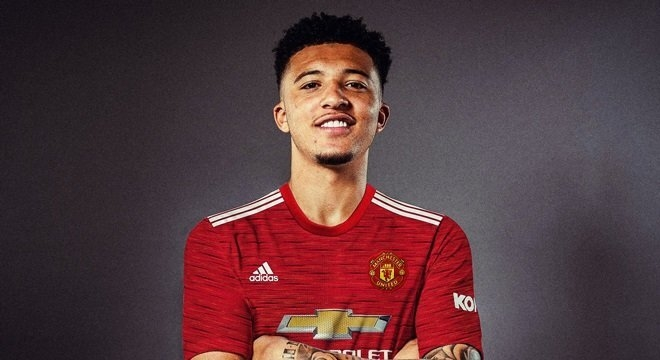
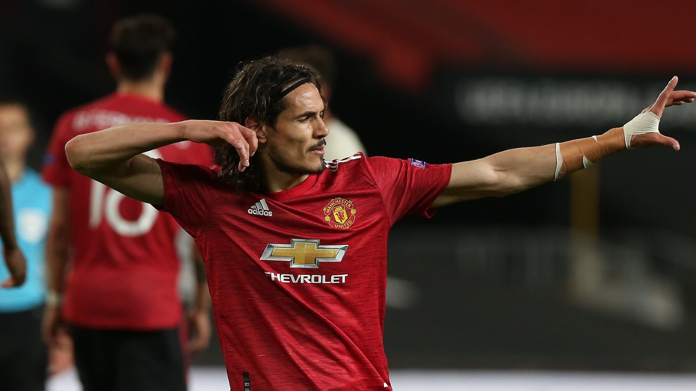

TEAM COLOR
GOALKEEPERS

DEFENDERS
MIDFIELDERS


FORWARDS



"BEING GIVEN THE OPPORTUNITYTO MOVE THE CLUB FORWARD WITH ALL ITS POTENTIAL IS FANTASTIC"

Ole Gunnar Solskjær (sinh ngày 26 tháng 2 năm 1973 tại Kristiansund, Møre og Romsdal) là một huấn luyện viên bóng đá người Na Uy và là cựu cầu thủ bóng đá đã dành phần lớn sự nghiệp của mình cho CLB Manchester United. Hiện tại, ông là huấn luyện viên của Manchester United.
| POSITION | COUNTRY | DATE OF BIRTH |
| Manager | Norwegian | 26 FEB 1973 |
| JOINED | FIRST MATCH | |
| 19 DEC 2018 | 22 DEC 2018 V Cardiff City(A) |

Là một cựu cầu thủ và huấn luyện viên bóng đá.người đã giúp Manchester United trở thành câu lạc bộ bóng đá vĩ đại nhất lịch sử nước Anh.Với biệt danh "Máy sấy tóc", ông được coi là huấn luyện viên bóng đá xuất sắc và vĩ đại nhất lịch sử.

Là một cựu cầu thủ bóng đá chuyên nghiệp người Anh thi đấu cho các câu lạc bộ Manchester United ở vị trí tiền vệ.Anh là một trong những cầu thủ sút phạt xuất sắc nhất trong lịch sử bóng đá.
là một cầu thủ bóng đá người Bắc Ireland, nổi tiếng với thời gian chơi cho Manchester United. Ông chơi ở vị trí tiền vệ cánh
Eric Cantona là cựu cầu thủ bóng đá người Pháp. Ông kết thúc sự nghiệp bóng đá chuyên nghiệp của mình tại câu lạc bộ Manchester United, nơi ông giành được bốn danh hiệu Ngoại hạng Anh trong 5 năm.
Gary Neville là cầu thủ bóng đá người Anh hiện đã giải nghệ. Anh từng thi đấu ở giải ngoại hạng Anh cho M.U . Vị trí sở trường của anh là hậu vệ cánh phải,Gary bắt đầu chơi bóng tại M.U và dành cả sự nghiệp của mình cho United.
Rio Ferdinand là một cựu cầu thủ bóng đá Anh. Anh là một hậu vệ có cảm giác bóng tốt và có thể chuyển các đường bóng từ cản phá qua tấn công, anh chơi bóng bổng tốt. Anh đã được chọn vào các đội hình tiêu biểu của FIFA World Cup.
Vidic trưởng thành từ Sao Đỏ Beograd. nổi tiếng với lối chơi máu lửa, không ngại va chạm cùng với khả năng chơi độc lập cực tốt. cùng với Rio Ferdinand tạo thành 1 bộ đôi trung vệ thép cho hàng thủ MU.

Chơi ở vị trí tiền vệ trụ,Keane được xem là một trong những tiền vệ xuất sắc nhất của bóng đá hiện đại. Với lối chơi nhiệt tình và máu lửa, chính nhờ tính cách này mà anh đã được trao chiếc băng đội trưởng của Manchester United .
Ông từng chơi cho câu lạc bộ Manchester United ở giải ngoại hạng Anh Ông chơi ở vị trí tiền vệ cánh trái nhưng ông ngày càng được huấn luyện viên Alex Ferguson sử dụng trong vai trò một tiền vệ trung tâm trong những năm sau này

Peter Schmeichel là cựu thủ môn bóng đá người Đan Mạch.Schmeichel nổi tiếng nhất với giai đoạn thành công cùng CLB Manchester United, tại đó ông có được chức vô địch UEFA Champions League cũng như cú ăn 3 lịch sử.Ông được coi là một trong những thủ môn xuất sắc nhất mọi thời đại
Carlos Alberto Tevez là một cầu thủ bóng đá người Argentina thi đấu ở vị trí tiền đạo. Anh được đánh giá cao ở sự năng nổ và nhiệt tình, cùng hiệu suất ghi bàn đáng nể Tevez chuyển tới Manchester United năm 2007 và giành hai chức vô địch Premier League và UEFA Champions League 2008.Kể từ khi ra mắt đội tuyển quốc gia Argentina năm 2004, Tevez có hơn 75 lần ra sân.
Wayne Rooney là một cựu cầu thủ của M.U Anh thường chơi ở vị trí tiền đạo, đôi khi anh cũng được sử dụng ở vị trí tiền vệ. Được đánh giá là một trong những cầu thủ xuất sắc nhất thế hệ của anh, Rooney là cầu thủ ghi nhiều bàn thắng nhất cho đội tuyểN Anh và Manchester United. .

ÔngÔng là cựu cầu thủ bóng đá chuyên nghiệp của Anh, người đã giành chức vô địch World Cup và danh hiệu Quả Bóng Vàng năm 1966. Ông đã cống hiến phần lớn sự nghiệp chơi bóng cho câu lạc bộ Manchester United, nơi mà ông đã thành danh với những khả năng tấn công xuất sắc của một tiền vệ cùng những cú sút xa.ông là người đội trưởng dẫn dắt Manchester United giành chức vô địch châu Âu và là người ghi 2 bàn trong trận chung kết giúp United trở thành đội bóng đầu tiên của Anh vô địch cúp châu Âu.
Huấn luyện viên Alex Ferguson, người mà sau này anh nói: "Ông ấy là cha tôi trong lĩnh vực thể thao, một trong những nhân tố quan trọng và có ảnh hưởng nhất trong sự nghiệp của tôi.
là một cựu cầu thủ bóng đá Anh. Anh được coi là một trong những cầu thủ xuất sắc nhất lịch sử. Anh dành toàn bộ sự nghiệp thi đấu chuyên nghiệp của mình với câu lạc bộ Manchester United.
là một cựu cầu thủ bóng đá người Hà Lan chơi ở vị trí thủ môn. Anh là cầu thủ khoác áo Đội tuyển bóng đá quốc gia Hà Lan nhiều nhất . Anh cũng được coi là một trong những thủ môn xuất sắc nhất lịch sử bóng đá
tên gọi Ruud van Nistelrooy, là cựu cầu thủ bóng đá người Hà Lan chơi vị trí tiền đạo. Van Nistelrooy là cầu thủ đoạt giải vua phá lưới. Biệt danh của anh khi còn thi đấu là 'VanGol'.
Sir Alexander Chapman "Alex" Ferguson (sinh ngày 31 tháng 12 năm 1941)
là một cựu cầu thủ và huấn luyện viên bóng đá người Scotland.
Trong vòng 31 năm (1982–2013), ông đã giúp Manchester United trở thành
câu lạc bộ bóng đá vĩ đại nhất lịch sử nước Anh với 20 lần vô địch giải quốc nội.
Ngày 12 tháng 6 năm 1999, Ferguson đã được nữ hoàng Anh phong tước hiệu Hiệp sĩ c
ho những cống hiến của mình trong bóng đá. Với biệt danh "Máy sấy tóc",
ông được coi là huấn luyện viên bóng đá xuất sắc và vĩ đại nhất lịch sử.
Ông đứng đầu danh sách 100 Huấn luyện viên xuất sắc nhất mọi thời đại của FourFourTwo.
Ferguson đã được bổ nhiệm làm huấn luyện viên tại Old Trafford ngày 6 tháng 11 năm 1986 khi United
đang xếp ở vị trí áp chót trên bảng xếp hạng (21/22) và bổ nhiệm Archie Knox, trợ lý của mình
tại Aberdeen làm ở vị trí tương tự. Ông rất lo lắng cho đội bóng khi các cầu thủ như Norman Whiteside,
Paul McGrath và Bryan Robson uống rượu quá nhiều và chán nản bởi phong độ của mình, nhưng ông đã vực dậy tinh thần cho họ,
và United đã kết thúc mùa giải ở vị trí thứ 11. Trận đấu đầu tiên của Ferguson cùng United là thất bại 0-2 trước đội bóng
dưới cơ Oxford United vào ngày 8 tháng 11, bảy ngày sau đó là trận hòa không bàn thắng với đội mới lên hạng Norwich City, và sau
đó giành chiến thắng 1-0 đầu tiên của mình tại sân nhà trước QPR ngày 22 Tháng 11. Kết quả dần được cải thiện khi mùa giải trôi đi,
và thời gian đã chứng tỏ United đang trên đà phục hồi. Năm 1987 bắt đầu suôn sẻ với chiến thắng 4-1 trước Newcastle United nhưng kết
thúc mùa giải United chỉ đứng ở vị trí thứ 11.
Trong mùa giải 1987-1988, Ferguson đã ký nhiều bản hợp đồng lớn bao gồm Steve Bruce, Viv Anderson, Brian McClair và Jim Leighton.
Các cầu thủ mới đã đóng góp rất lớn cho thành quả đứng thứ hai của United (kém 9 điểm với Liverpool). Tuy nhiên, dù United chỉ thua 5 trận,
họ đã hòa tới 12 trong các trận đấu còn lại và rõ ràng vẫn còn nhiều điều phải làm nếu họ muốn đuổi kịp đối thủ đến từ Đông Bắc của mình.
Ngày 8 tháng 5 năm 2013, Sir Alex Ferguson tuyên bố sẽ nghỉ hưu sau khi kết thúc mùa giải 2012–13,
với gần 27 năm làm huấn luyện viên trưởng câu lạc bộ Manchester United.